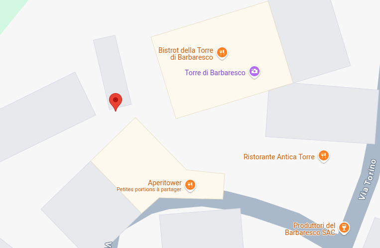

C1-ESDN-05 : Profilage numérique : l’affaire Burrill#
Objectifs pédagogiques#
Comprendre ce qu’est une donnée. Mettre en relation les données et leur écosystème.
Que partagez-vous, et à qui ?#
Usage des réseaux sociaux ?
Sur le web ?
Lorsque vous achetez quelque chose ?
Est-il possible de dresser un portrait fidèle de vous à l’aide des informations que vous partagez ?
Une simple image postée sur un réseau#
A votre avis, quelle information se trouve encaspulée dans cette image ?
En utilisant un outil d’extraction de méta données, voici l’information :
ExifTool Version Number : 12.16
File Name : 20250415_132848.jpg
Directory : .
File Size : 3.9 MiB
File Modification Date/Time : 2025:04:29 15:02:42+02:00
File Access Date/Time : 2025:04:29 15:05:28+02:00
File Inode Change Date/Time : 2025:04:29 15:03:03+02:00
File Permissions : rw-r--r--
File Type : JPEG
File Type Extension : jpg
MIME Type : image/jpeg
Exif Byte Order : Little-endian (Intel, II)
Make : samsung
Camera Model Name : Galaxy S24
Orientation : Horizontal (normal)
X Resolution : 72
Y Resolution : 72
Resolution Unit : inches
Software : S921BXXS5AYB6
Modify Date : 2025:04:15 13:28:48
Y Cb Cr Positioning : Centered
Exposure Time : 1/1112
F Number : 2.4
Exposure Program : Program AE
ISO : 25
Exif Version : 0220
Date/Time Original : 2025:04:15 13:28:48
Create Date : 2025:04:15 13:28:48
Offset Time : +02:00
Offset Time Original : +02:00
Shutter Speed Value : 1
Aperture Value : 2.4
Brightness Value : 9.69
Exposure Compensation : 0
Max Aperture Value : 2.4
Metering Mode : Center-weighted average
Flash : No Flash
Focal Length : 7.0 mm
Sub Sec Time : 917
Sub Sec Time Original : 917
Sub Sec Time Digitized : 917
Flashpix Version : 0100
Color Space : Uncalibrated
Exif Image Width : 4000
Exif Image Height : 3000
Exposure Mode : Auto
White Balance : Auto
Digital Zoom Ratio : 7.42
Focal Length In 35mm Format : 69 mm
Scene Capture Type : Standard
Image Unique ID : F11XLPE00SM
GPS Latitude Ref : North
GPS Longitude Ref : East
GPS Altitude Ref : Above Sea Level
Compression : JPEG (old-style)
Thumbnail Offset : 1010
Thumbnail Length : 51797
Warning : Bad length ICC_Profile (length 632)
Profile CMM Type :
Profile Version : 4.3.0
Profile Class : Display Device Profile
Color Space Data : RGB
Profile Connection Space : XYZ
Profile Date Time : 2022:07:01 00:00:00
Profile File Signature : acsp
Primary Platform : Unknown (SEC)
CMM Flags : Not Embedded, Independent
Device Manufacturer : Unknown (SEC)
Device Model :
Device Attributes : Reflective, Glossy, Positive, Color
Rendering Intent : Perceptual
Connection Space Illuminant : 0.9642 1 0.82491
Profile Creator : Unknown (SEC)
Profile ID : 0
Profile Description : DCI-P3 D65 Gamut with sRGB Transfer
Profile Copyright : Copyright (c) 2022 Samsung Electronics Co., Ltd.
Media White Point : 0.9642 1 0.82491
Chromatic Adaptation : 1.04781 0.02289 -0.05013 0.02954 0.99048 -0.01704 -0.00923 0.01505 0.75214
Red Matrix Column : 0.51508 0.24117 -0.00105
Green Matrix Column : 0.29195 0.69223 0.04189
Blue Matrix Column : 0.15718 0.06659 0.78455
Red Tone Reproduction Curve : (Binary data 32 bytes, use -b option to extract)
Green Tone Reproduction Curve : (Binary data 32 bytes, use -b option to extract)
Blue Tone Reproduction Curve : (Binary data 32 bytes, use -b option to extract)
XMP Toolkit : Adobe XMP Core 5.1.2
Version : 1.0
Directory Item Semantic : Primary
Directory Item Mime : image/jpeg
Directory Item Length : 185484
MPF Version : 0100
Number Of Images : 2
MP Image Flags : (none)
MP Image Format : JPEG
MP Image Type : Undefined
MP Image Length : 185484
MP Image Start : 3913453
Dependent Image 1 Entry Number : 0
Dependent Image 2 Entry Number : 0
Image Width : 4000
Image Height : 3000
Encoding Process : Baseline DCT, Huffman coding
Bits Per Sample : 8
Color Components : 3
Y Cb Cr Sub Sampling : YCbCr4:2:0 (2 2)
Time Stamp : 2025:04:15 13:28:49+02:00
Aperture : 2.4
Image Size : 4000x3000
Megapixels : 12.0
Scale Factor To 35 mm Equivalent: 9.9
Shutter Speed : 1/1112
Create Date : 2025:04:15 13:28:48.917
Date/Time Original : 2025:04:15 13:28:48.917+02:00
Modify Date : 2025:04:15 13:28:48.917+02:00
Thumbnail Image : (Binary data 51797 bytes, use -b option to extract)
GPS Altitude : 342 m Above Sea Level
GPS Latitude : 44 deg 43' 38.83" N
GPS Longitude : 8 deg 4' 48.89" E
MP Image 2 : (Binary data 185484 bytes, use -b option to extract)
Circle Of Confusion : 0.003 mm
Field Of View : 29.2 deg
Focal Length : 7.0 mm (35 mm equivalent: 69.0 mm)
GPS Position : 44 deg 43' 38.83" N, 8 deg 4' 48.89" E
Hyperfocal Distance : 6.70 m
Light Value : 14.6
On peut en déduire que :
l’utilisateur possède un Samsung Galaxy S24
cette image a été prise le mardi 15 avril 2025 à 13h28
le lézard se trouve à une altitude de 342 mètres au-dessus de la mer.
la position GPS du lézard est : 44°43’38.83” N, 8°4’48.89”E
Que l’image a été prise à l’angle sud-ouest de la Tour de Barbaresco, un petit village viticole du Piémont en Italie du Nord :

Donnée et métadonnées#
Donnée#
Toute trace ou information issue d’une extraction en référence au dispositif dont elle est issue.
Métadonnée#
Donnée utilisée pour décrire ou définir une autre donnée.
Collection de données#
Les données et les métadonnées sont évidemment collectées par les appareils électroniques personnels connectés (Internet of Things :
Smartphones
Ordinateurs
Elles son aussi collectées par d’autre dispositifs :
Organisations bancaires lors de transactions par carte bancaire : numéro de la carte, commerçant, localisation, etc..
Commerces avec cartes de fidélité : une Migros carte cumulus ou COOP Supercard c’est un like sur un réseau social !
Applications pour Smartphone qui a priori ne collectent rien (il est possible de vérifier les droits de ces applications)
Compteur de temps passé sur des publicités (ou un certain type de média sur les réseaux sociaux)
Comportement d’un visiteur de site (popup d’une IA qui vient vous demander si vous avez besoin d’aide)
Cookies sur les sites web
Où finissent ces données ?#
Elles restent dans l’organisation qui les a collectées. Cela doit être le cas dans un monde idéal.
Elles sont vendues. Parfois légalement, parfois pas. C’est par exemple le cas de Migros et COOP qui l’ont fait de manière légale. Les acheteurs de ces données sont des data brokers (ou boursiers de données)
Elles sont volées lors d’une attaque et peuvent finir par être disponible publiquement. Ce fût le cas notamment avec l’affaire
Profilage#
Le stockage de l’ensemble des données relatives à un individu ou un groupe d’individus permet ensuite d’en faire l’analyse. On parle d’agrégation de données et d’analyse sur les données agrégées.
Cette étape permet de dresser un profil d’utilisateur. Il peut se faire de manière automatique. Le RGPD le défini comme toute forme de traitement automatisé de données à caractère personnel consistant à utiliser ces données à caractère personnel pour évaluer certains aspects personnels relatifs à une personne physique (…). Ce même RGPD permet d’une certaine manière à l’utilisateur de s’opposer à une partie du traitement automatique.
Un profile d’utilisateur peut donc contenir :
Ses données personnelles (nom, prénom, âge, localisation)
Ses habitudes d’achat (quoi, quand, quels commerces)
les dates de ses vacances (hors scolaire, scolaire)
Ses intérêts personnels
Ses hobbies
Ses compétences spécifiques (par exemple pour des tâches qui demanderaient de l’aide)
Etc..
Cas pratique : Msgr Jeffrey Burrill#
L’affaire a fait grand bruit en 2021.
En résumé :
Msgr Burrill a été élu Secrétaire Général de la Conférence US des Évêques Catholiques en novembre 2020. Il a été choisi pour coordonnéer la réponse des évêques américains au sujets des abus sexuels qui ont secoué l’Eglise en 2018.
Msgr Burril démissionne 9 mois après en juillet 2021.
Que s’est-il passé ?
Des journalistes ont simplement acheté des données. L’analyse de ces données ont permis de :
récupérer les données de géolocalisation horodatées
savoir quand il se trouvait à son bureau ainsi que dans chaque ville où se réunissait la conférence des évêques US
remonter jusqu’à 2018
retrouver les connexions de Burrill sur des réseaux de rencontre (notamment Grindr)
Il est expressement ordonné aux responsables de l’église qu’ils soient abstinents
Conséquences#
L’affaire a mis en lumière la problèmatique de la protection des données aux Etats-Unis et la revente des données.
Sources : pour aller plus loin#
https://dev-enseigner.modulo-info.ch/enjx1/activ/donnees_reputation.html
Exodus : https://exodus-privacy.eu.org/fr/
The Pillar : Pillar Investigates: USCCB gen sec Burrill resignsaer sexual misconduct allegations